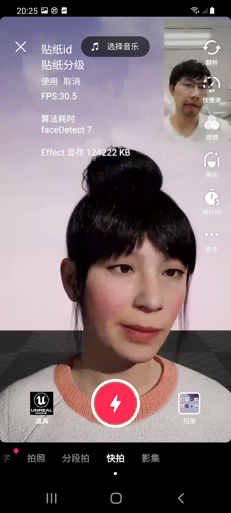

基于UE4的MetaHumans人脸表情驱动
- 搭建一套云端渲染链路
- 手机摄像头拍摄用户视频上传至云端处理，估计人脸的BlendShape系数与位姿
- 驱动UE4 MetaHumans人脸动画并传回用户手机显示
APP端截图:

早期MetaHumans截屏与演示:
驱动非MetaHumans模型:
基于UE4 Groom的假发特效
搭建一套云端渲染链路，手机摄像头拍摄用户视频上传到云端处理
将虚拟场景中的Groom头发组件与二维图像上用户人脸进行配准
将Groom假发渲染到图像上并传回用户手机，实现高质量的虚拟头发道具效果
Reconstructing Manhattan-world urban buildings by fitting cubes - PG2021
输入建筑物图像,得到点云和线云
从线云中提取平面,通过切割平面得到交点,从角点出发,拟合点云得到cube模型
提取图像边缘,通过将cube反投影到图像中,使得cube对应边和图像中的对应边匹配,估计新的cube尺寸
通过纹理映射后得到最终带有纹理的网格模型
Conditional Accept version pdf